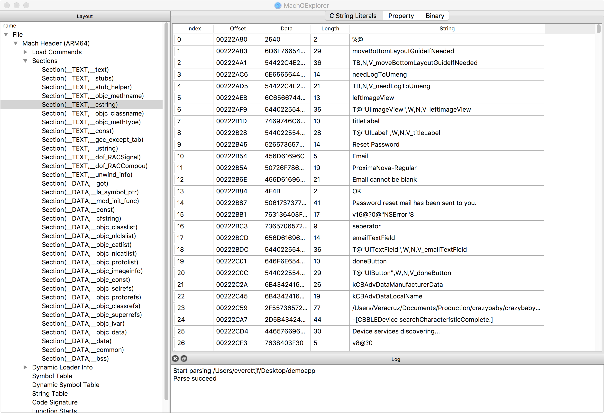

A focused desktop explorer for Mach-O, Fat binaries, .a archives, and the dyld shared cache. Drill from structure to code — sections, symbols, disassembly, ObjC & Swift metadata — in one fast UI.
From load commands down to a single disassembled instruction — and the modern Apple metadata most tools skip.
Load commands, sections, symbols, relocations, and strings — laid out in a navigable layout tree mirroring the file on disk.
Optional inline disassembly of __TEXT,__text so you can read the actual instructions without leaving the explorer.
Browse __swift5_* semantic graphs and Objective-C class/metadata structures decoded into readable rows.
List every image inside a dyld shared cache, filter it, and extract single or batch images — then drill straight back in.
Defensive parser checks plus a fuzz & regression suite mean you can poke at suspicious or malformed files safely.
Filter rows, copy single rows or selections, export CSV, and move fully from the keyboard. A built-in update check keeps you current.

Mach header, load commands, sections, symbol & string tables, dynamic loader info — all in one navigable hierarchy.
Each node opens a filterable table with C string literals, properties, and a raw binary view.
Clear feedback on what was parsed and any warnings — so malformed files never fail silently.
Run the same analysis tree without the GUI — perfect for CI, batch jobs, and piping into jq.
The fastest way on macOS — installs the cask straight from the tap.
Grab the latest signed build for macOS or Windows from GitHub Releases.